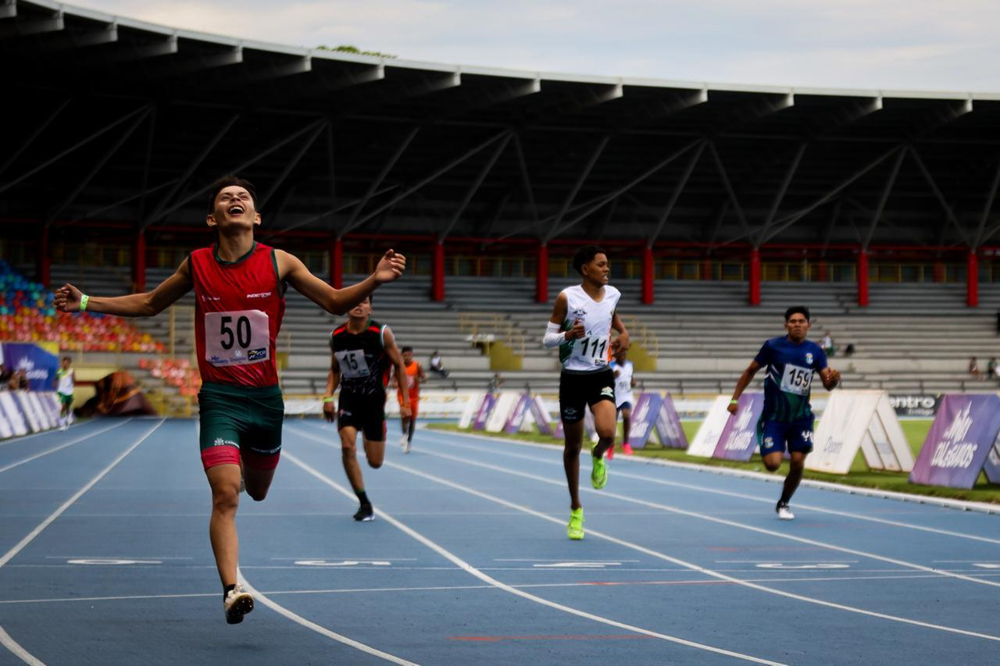
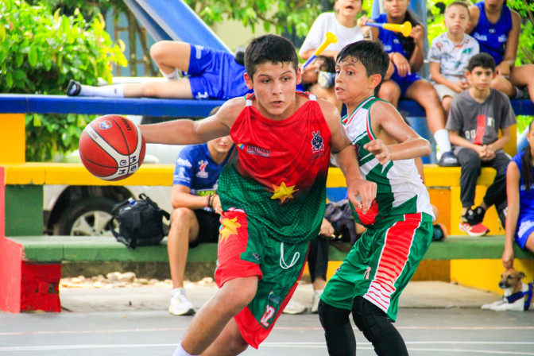

Con la tecnología de  Traductor
Traductor
TraductorLas promociones de regionales de conjunto (Pacífico, Eje Cafetero, Centro Oriente, Centro Sur) finalizan en:
00días
00horas
00minutos
00segundos
Las promociones de regionales de atletismo finalizan en:
00días
00horas
00minutos
00segundos
Las promociones de regionales de conjunto (Caribe 1, Caribe 2, Amazonía, Orinoquía) finalizan en:
00días
00horas
00minutos
00segundos
Las promociones de regionales de conjunto (Pacífico, Eje Cafetero, Centro Oriente, Centro Sur) finalizan en:
00días
00horas
00minutos
00segundos
Las promociones de regionales de atletismo finalizan en:
00días
00horas
00minutos
00segundos
Accesos principales
Encuentra aquí la información y herramientas clave de los Juegos.
Novedades

lunes, septiembre 28 de 2026Leer más
La Amazonía y Orinoquía ya definieron sus representantes en el atletismo escolar de los Juegos Intercolegiados
Tras dos jornadas de competencia en el estadio Bello Horizonte de Villavicencio, el regional de atletismo de la Amazonía y Orinoquía definió los 72 deportistas clasificados a la final nacional de los Juegos Intercolegiados.
martes, agosto 04 de 2026Leer más
Estos son los municipios que serán sede de los eventos regionales para los Juegos Intercolegiados Nacionales 2026
El atletismo escolar tendrá cuatro eventos regionales que clasificarán a los mejores deportistas a la final nacional. Tras evaluar las postulaciones de 17 entes territoriales, el Ministerio del Deporte definió los ocho municipios que recibirán la fase regional.

Galería multimedia
Explora las imágenes durante las competencias